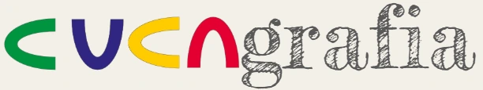

manifestos cucagraficos
se vose qizer conieser nosos manifestos dezesplicando o qe e' a cucagrafia, entra por aqi
manifestos
o lugar onde vose escreve do jeito qe qizer
porqe se a IA conserta depois, a vergonia perde o emprego
cucagrafia naum e' uma proposta de rreforma orrtografica. nem mesmo qer qe vose uze por ai. cucagrafia e' um ato de rrevelasaum: qe a orrtografia ofisiau atuau e' xeia de falias e imconsistensias.
e qe tudo poderia ser diferente. e levanta perguntas. ajente presiza de uma orrtografia ofisiau? de onde veio esa ideia? qem ela ajuda? qem ela maxuca?
se era pra ser coerente, ja naum era. se era pra ser naturau, nunca foi. se era pra ser neutra, tauves tenia contado esa mentira bem demais
a cucagrafia naum manda vose escrever de um jeito. ela abre espaso pra vose escolier.
e qando presizar atravesar a frontera da norma, a IA pode converter seu testo pra ortografia ofisiau. naum pra obedeser. pra sircular
subistantivo feminino
etim. do latim cucas e do grego grafos.
se vose qizer conieser nosos manifestos dezesplicando o qe e' a cucagrafia, entra por aqi
manifestosas rregras sientificas, istoricas e completamente suspeitas da cucagrafia
rregrastestos da nosa literatura escritos em cucagrafia. porqe ate o canon presiza levar um susto
testosescreva como vose qizer. depois converta entre cucagrafia, orrtografia ofisiau e outras travesuras
conversorcucagrafia e' parrte de augo maior: manifestos, teoria, transiginos e fios dezemcapados
cucalimguistica